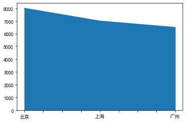

1. Python与数据科学
2. 数据分析三个库
2.1 numpy
1 | import numpy as np |
[1, 2, 3, 4]
[1 2 3 4]
<class 'list'>
<class 'numpy.ndarray'>
1 | # 接下来通过列表索引和数组索引来访问列表和数组中的元素，代码如下： |
2
2
[1, 2]
[1 2]
从上面结果可以看到列表和数组有着相同的索引机制，唯一的区别好像就是数组里面是通过空格分隔元素，而列表用的是逗号。
2.1.1 Numpy数组与列表的区别
从上面的分析得知Numpy数组和列表很类似，那么为什么Python又要创建一个Numpy库呢？其原因很多，这里主要讲两点：
1.数组可以比较方便的进行一些数学运算，而列表则比较麻烦；
2.数组可以支持多维的数据，而列表通常只能储存一维的数据。
1 | c = a * 2 |
[1, 2, 3, 4, 1, 2, 3, 4]
[2 4 6 8]
1 | e = [[1,2], [3,4], [5,6]] # 列表里的元素为小列表 |
[[1, 2], [3, 4], [5, 6]]
[[1 2]
[3 4]
[5 6]]
可以看到列表虽然包含着三个小列表，但其还是一个一维的结构，而创建的二维数组则是一个三行两列的二维结构内容，这个也是之后学习pandas库的核心内容了，因为数据数据处理中经常用到二维数组，也即二维表格结构。
2.1.2 创建数组的几种方式
1 | # 创建一维数组 |
[1 2 3 4]
[[1 2]
[3 4]
[5 6]]
除此之外，还有一些常见的创建数组的方式，这里以一维数组为例，我们还可以采用np.arange()函数来产生一维数组，其中括号里可以选择1个或2个或3个参数，代码如下：
1 | # 一个参数 参数值为终点，起点取默认值0，步长取默认值1 |
[0 1 2 3 4]
[5 6 7 8 9]
[5. 5.5 6. 6.5 7. 7.5 8. 8.5 9. 9.5]
我们还可以通过np.random模块来创建随机一维数组，比如可以通过np.random.randn(3)来创建一个服从正太分布（均值为0，方差为1的分布）的3个随机数一维数组，代码如下：
1 | a = np.random.randn(3) |
[-0.44003854 0.15893829 0.18365733]
如果把np.random.randn(3)换成np.random.rand(3)，那生成的就是0-1之间的3个随机数，这个在之后2.3.1小节演示绘制散点图的时候会用到。
至于二维数组的创建与学习，可以利用一维数组中的np.arange()函数和reshape方法产生一个二维数组，比如将0到11个数转换成3行4列的二维数组，代码如下：
1 | a = np.arange(12).reshape(3,4) |
[[ 0 1 2 3]
[ 4 5 6 7]
[ 8 9 10 11]]
这里再简单提一种随机二维数组的创建，代码如下。其中np.random.randint()函数用来创建随机整数，括号里第一个元素0表示起始数，第二个元素10表示终止数，第三个元素(4, 4)则表示生成一个4行4列的二维数组
1 | a = np.random.randint(0, 10, (4, 4)) |
[[1 2 8 9]
[0 5 6 3]
[7 7 7 2]
[5 1 4 9]]
2.2 pandas
2.2.1 引言
相较于Numpy来说，Pandas更善于处理二维数据。Pandas主要有两种数据结构：Series和DataFrame。Series类似于通过Numpy产生的一维数组，不同的是Series对象不仅包含数值，还包含一组索引，其创建方式如下：
1 | import pandas as pd |
0 丁一
1 王二
2 张三
dtype: object
1 | # 它也是一个一维数据结构，并且对于每个元素都有一个行索引可以用来定位，比如可以通过s1[1]来定位到第二个元素“王二”。 |
王二
Series单独使用相对较少，pandas主要采用DataFrame数据结构。DataFrame是一种二维表格数据结构，直观一点的话可以将其看作一个Excel表格。
2.2.2 二维数据表格DataFrame的创建
有三种DataFrame常见的创建方法：通过列表创建、通过字典创建及通过二维数组创建。
(1) 通过列表创建DataFrame
1 | import pandas as pd |
| 0 | 1 | |
|---|---|---|
| 0 | 1 | 2 |
| 1 | 3 | 4 |
| 2 | 5 | 6 |
可以看到通过pandas的DataFrame功能生成的二维数组更像我们在Excel中看到二维表格数据，它也有行索引和列索引，其中这里的索引序号都是从0开始的。
1 | # 我们还可以自定义其列索引和行索引名称，代码如下： |
| date | score | |
|---|---|---|
| A | 1 | 2 |
| B | 3 | 4 |
| C | 5 | 6 |
1 | # 通过列表生成DataFrame还可以采用如下的方式，演示代码如下： |
| date | score | |
|---|---|---|
| 0 | 1 | 2 |
| 1 | 3 | 4 |
| 2 | 5 | 6 |
(2) 通过字典创建DataFrame
1 | # 通过Pandas创建二维数组 - 字典法 |
| a | b | |
|---|---|---|
| x | 1 | 2 |
| y | 3 | 4 |
| z | 5 | 6 |
1 | # 如果想让字典键变成行索引，可以通过from_dict的方式来将字典转换成DataFrame，并同时设置orient参数为index，代码如下： |
0 1 2
a 1 3 5
b 2 4 6
其中orient参数指定字典键对应的方向，默认值为columns，如果不设置成index的话，则还是默认字典键为列索引
补充知识点：通过.T来对表格进行转置
1 | b = pd.DataFrame({'a': [1, 3, 5], 'b': [2, 4, 6]}) |
a b
0 1 2
1 3 4
2 5 6
0 1 2
a 1 3 5
b 2 4 6
(3) 通过二维数组创建
1 | import numpy as np |
array([[ 0, 1, 2, 3],
[ 4, 5, 6, 7],
[ 8, 9, 10, 11]])
1 | # 通过Numpy产生的二维数组，也可以创建DataFrame，这里以2.1.3小节里提到的二维数组为例生成一个3行4列的DataFrame，代码如下： |
| A | B | C | D | |
|---|---|---|---|---|
| 1 | 0 | 1 | 2 | 3 |
| 2 | 4 | 5 | 6 | 7 |
| 3 | 8 | 9 | 10 | 11 |
补充知识点：修改行索引或列索引名称
1 | a = pd.DataFrame([[1, 2], [3, 4]], columns=['date', 'score'], index=['A', 'B']) |
| date | score | |
|---|---|---|
| A | 1 | 2 |
| B | 3 | 4 |
1 | # 如果想对索引进行重命名的话，rename()函数的使用方法如下： |
| 日期 | 分数 | |
|---|---|---|
| 阿里 | 1 | 2 |
| 腾讯 | 3 | 4 |
补充知识点：这里通过rename之后并没有改变原表格结构，需要重新赋值给a才能改变原表格;或者在rename()中设置inplace参数为True，也能实现真正替换，代码如下：
1 | a = pd.DataFrame([[1, 2], [3, 4]], columns=['date', 'score'], index=['A', 'B']) |
| 日期 | 分数 | |
|---|---|---|
| 阿里 | 1 | 2 |
| 腾讯 | 3 | 4 |
1 | # 通过.values属性，也可以查看此时的index值 |
['阿里' '腾讯']
1 | # 如果想给行索引命名，也可以通过如下代码，相当于增加了以‘公司’为行索引的空行 |
| 日期 | 分数 | |
|---|---|---|
| 公司 | ||
| 阿里 | 1 | 2 |
| 腾讯 | 3 | 4 |
1 | # 如果想把行索引变成某列的内容，可以使用set_index()函数，代码如下： |
| 分数 | |
|---|---|
| 日期 | |
| 1 | 2 |
| 3 | 4 |
1 | # 如果此时想把行索引换成数字索引，则可以使用reset_index()函数，代码如下： |
| 日期 | 分数 | |
|---|---|---|
| 0 | 1 | 2 |
| 1 | 3 | 4 |
2.2.3 Excel等文件的读取和写入
1 | # 输入以下代码，用于读取Excel数据： |
| date | score | price | |
|---|---|---|---|
| 0 | 2018-09-03 | 70 | 23.55 |
| 1 | 2018-09-04 | 75 | 24.43 |
| 2 | 2018-09-05 | 65 | 23.41 |
| 3 | 2018-09-06 | 60 | 22.81 |
| 4 | 2018-09-07 | 70 | 23.21 |
1 | # 其中read_excel还可以设定参数，使用方式如下： |
注意：sheet_name用于指定要读取的工作表，可以是工作表的名称，也可以是数字（默认为0，即第一个工作表）
除了excel,pandas还可以读取CSV。CSV文件本质上是一个文本文件，它仅存储数据，不能向excel那样存储格式、公式、宏等信息，所以所占空间通常很小。CSV文件一般用逗号分割，既可以用excel打开，也可以用文本编辑器打开
1 | # 输入以下代码，用于读取CSV文件： |
| date | score | price | |
|---|---|---|---|
| 0 | 2018-09-03 | 70 | 23.55 |
| 1 | 2018-09-04 | 75 | 24.43 |
| 2 | 2018-09-05 | 65 | 23.41 |
| 3 | 2018-09-06 | 60 | 22.81 |
| 4 | 2018-09-07 | 70 | 23.21 |
1 | # read_csv也可以指定参数，使用方式如下： |
(2) 文件写入
1 | # 先生成一个DataFrame |
运行之后将在代码所在的文件夹生成一个名为data_new2的Excel文件

在上表中，保存的Excel第一列还保留了索引信息，如果想将其删去，可以设置to_excel的参数index为False。to_excel的常见参数有如下一些：sheet_name：数据表名；index：True or False，默认为True保存索引信息，即输出文件的第一列为索引值，选择False的话则忽略索引信息；columns：选择所需要的列；encoding：编码方式。
例如要将数据表格导入到Excel文件中并忽略行索引信息，则代码如下：
1 | data.to_excel('data_new2.xlsx', index=False) |
.png)
1 | # 通过类似的方式，可以将数据写入到CSV文件当中，代码如下： |
.png)
补充知识点：文件相对路径与绝对路径
相对路径
文件相对路径，即代码所在的文件夹，例如上面案例中写的data.to_excel(‘data.xlsx’)就是在代码所在的文件夹生成Excel文件。
绝对路径
文件绝对路径，就是文件完整的路径名称，例如’E:\大数据分析\data.xlsx’就是绝对路径，不过因为在Python中反斜杠“\”经常有特殊含义，比如说“\n”表示换行，所以通常建议写绝对路径的时候写两个反斜杠取消可能存在的单个反斜杠的特殊含义，写成’E:\大数据分析\data.xlsx’。
除了用两个反斜杠来取消一个反斜杠的特殊意义外，还可以在文件路径的字符串前面加一个r，也可以取消单个反斜杠的特殊含义，代码如下：
data.to_excel(‘E:\大数据分析\data.xlsx’) # 绝对路径推荐写法1，此时E盘要有一个名为“大数据分析”的文件夹
data.to_excel(r’E:\大数据分析\data.xlsx’) # 绝对路径推荐写法2，此时E盘要有一个名为“大数据分析”的文件夹
2.2.4 数据读取与筛选
1 | # 首先创建一个三行三列的表格，行索引设定为r1、r2和r3，列索引设定为c1、c2和c3，以此为例来演示数据的读取与筛选，代码如下： |
| c1 | c2 | c3 | |
|---|---|---|---|
| r1 | 1 | 2 | 3 |
| r2 | 4 | 5 | 6 |
| r3 | 7 | 8 | 9 |
1.按照行列进行数据筛选
(1) 按照列来选取数据
1 | # 通过以下代码可以通过列来选取数据，这里先选取单列。 |
r1 1
r2 4
r3 7
Name: c1, dtype: int64
此时返回的结果里没有表头信息了，这是因为通过data[‘c1’]选取一列的时候返回的是一个一维序列结构的类，也可以通过如下代码返回一个二维的表格数据。注意，经常是[[..]]的形式来取列，要保证取出的是完整的表格形式
1 | b = data[['c1']] |
| c1 | |
|---|---|
| r1 | 1 |
| r2 | 4 |
| r3 | 7 |
若要选取多列，则需要在中括号[]中给个列表，比如要读取c1和c3列，则可以写为data[[‘c1’, ‘c3’]]。这里需要特别注意的是，必须是一个列表，而不能是data[‘c1’, ‘c3’]，代码如下：
1 | c = data[['c1', 'c3']] |
| c1 | c3 | |
|---|---|---|
| r1 | 1 | 3 |
| r2 | 4 | 6 |
| r3 | 7 | 9 |
(2) 按照行来选取数据
1 | # 选取第2到3行的数据，注意序号从0开始，左闭右开 |
| c1 | c2 | c3 | |
|---|---|---|---|
| r2 | 4 | 5 | 6 |
| r3 | 7 | 8 | 9 |
而pandas推荐使用iloc方法来根据行的序号进行行选取，它是根据行序号选取的另一种方法，pandas觉得这样更加直观，不会像data[1:3]可能会引起混淆，代码如下：
1 | b = data.iloc[1:3] |
| c1 | c2 | c3 | |
|---|---|---|---|
| r2 | 4 | 5 | 6 |
| r3 | 7 | 8 | 9 |
而且如果要选取单行的话，就必须得用iloc了，比如选择倒数第一行，代码如下：
1 | c = data.iloc[-1] |
c1 7
c2 8
c3 9
Name: r3, dtype: int64
除了通过行的序号选取外，还可以通过loc方法根据行的名称来进行选取，代码如下：
1 | d = data.loc[['r2', 'r3']] |
| c1 | c2 | c3 | |
|---|---|---|---|
| r2 | 4 | 5 | 6 |
| r3 | 7 | 8 | 9 |
有的时候如果行数很多，可以通过head()方法来选取前5行，代码如下：
1 | e = data.head() |
| c1 | c2 | c3 | |
|---|---|---|---|
| r1 | 1 | 2 | 3 |
| r2 | 4 | 5 | 6 |
| r3 | 7 | 8 | 9 |
这里因为只创建了3行数据，所以通过data.head()会把全部数据都取到，如果只想取前两行的数据，可以写成data.head(2)。
(3) 按照区块来选取
1 | # 如果想选取某几行的某几列，则可以通过如下代码来实现，比如获得c1和c3列的前二行。 |
| c1 | c3 | |
|---|---|---|
| r1 | 1 | 3 |
| r2 | 4 | 6 |
1 | # 在实战中，通常采用iloc和列选取混合的方式来选取特定的区块或值，代码如下：（推荐使用） |
| c1 | c3 | |
|---|---|---|
| r1 | 1 | 3 |
| r2 | 4 | 6 |
1 | # 如果要选取单个的值，那么该方法就更有优势，比如选取c3列第一行的信息，就不能写成data['c3'][0]或data[0]['c3']了。下面的写法则比较清晰，iloc[0]先选取第一行，然后再选取c3列。 |
3
1 | # 也可以通过iloc和loc方法来同时选择行和列，代码如下： |
c1 c3
r1 1 3
r2 4 6
c1 c3
r1 1 3
r2 4 6
2.按照特定条件筛选
1 | # 在方括号里还可以通过判断条件来过滤行，比如选取c1列数字大于1的行，代码如下： |
| c1 | c2 | c3 | |
|---|---|---|---|
| r2 | 4 | 5 | 6 |
| r3 | 7 | 8 | 9 |
1 | # 如果有多个筛选条件，则可以通过“&”符号（表示“且”）或“|”（表示“或”）连接，比如这边筛选，c1列数字大于1且c2列数字小于8的行，代码如下，注意要记得加判断条件两旁的小括号。 |
| c1 | c2 | c3 | |
|---|---|---|---|
| r2 | 4 | 5 | 6 |
3.数据整体情况查看
1 | # 通过表格的shape属性，可以查看表格整体的行数和列数，在表格数据量较大的时候能快速了解表格的行数和列数。 |
(3, 3)
1 | # 通过表格的describe()函数可以快速的查看表格每一列的数量、平均值、标准差、最小值、25分位数、50分位数、75分位数、最大值等信息，代码如下： |
| c1 | c2 | c3 | |
|---|---|---|---|
| count | 3.0 | 3.0 | 3.0 |
| mean | 4.0 | 5.0 | 6.0 |
| std | 3.0 | 3.0 | 3.0 |
| min | 1.0 | 2.0 | 3.0 |
| 25% | 2.5 | 3.5 | 4.5 |
| 50% | 4.0 | 5.0 | 6.0 |
| 75% | 5.5 | 6.5 | 7.5 |
| max | 7.0 | 8.0 | 9.0 |
1 | # 通过value_counts()函数则可以快速的查看某一列都有什么数据，以及该数据出现的频次，代码如下： |
7 1
1 1
4 1
Name: c1, dtype: int64
4.数据运算、排序与删除
(1) 数据运算
1 | # 从已有的列中，通过数据运算创造一个新的一列，代码如下： |
| c1 | c2 | c3 | c4 | |
|---|---|---|---|---|
| r1 | 1 | 2 | 3 | 2 |
| r2 | 4 | 5 | 6 | 2 |
| r3 | 7 | 8 | 9 | 2 |
(2) 数据排序
1 | # 通过sort_values()可以根据列对数据进行排序，比如要对c2列进行降序排序，代码如下： |
| c1 | c2 | c3 | c4 | |
|---|---|---|---|---|
| r3 | 7 | 8 | 9 | 2 |
| r2 | 4 | 5 | 6 | 2 |
| r1 | 1 | 2 | 3 | 2 |
1 | # 其实如果是按列筛选，我们也可以直接写成如下代码，不用写“by=”，效果一样： |
| c1 | c2 | c3 | c4 | |
|---|---|---|---|---|
| r3 | 7 | 8 | 9 | 2 |
| r2 | 4 | 5 | 6 | 2 |
| r1 | 1 | 2 | 3 | 2 |
1 | # 此外，通过sort_index()可以根据"行索引"进行排序，如按行索引进行升序排列，代码如下： |
| c1 | c2 | c3 | c4 | |
|---|---|---|---|---|
| r1 | 1 | 2 | 3 | 2 |
| r2 | 4 | 5 | 6 | 2 |
| r3 | 7 | 8 | 9 | 2 |
(3) 数据删除
DateFrame.drop(index=None,columns=None,inplace=False)
index用于指定要删除的行，columns用于指定要删除的列，inplace默认为false，表示该删除操作不改变原表格，而是返回一个执行删除操作后的新表格，如果设置inplace为True，则会直接在原表格中执行删除操作
1 | # 例如删除c1列的数据，代码如下： |
| c2 | c3 | c4 | |
|---|---|---|---|
| r1 | 2 | 3 | 2 |
| r2 | 5 | 6 | 2 |
| r3 | 8 | 9 | 2 |
1 | # 删除多列的数据，比如c1和c3列，可以通过列表的方式将所需删除的列声明，代码如下： |
| c2 | c4 | |
|---|---|---|
| r1 | 2 | 2 |
| r2 | 5 | 2 |
| r3 | 8 | 2 |
1 | # 如果要删除行数据，比如删去第一行和第三行的数据，代码如下： |
| c1 | c2 | c3 | c4 | |
|---|---|---|---|---|
| r2 | 4 | 5 | 6 | 2 |
注意这里要输入行索引的名称而不是数字序号，不过如果行索引名称本来就是数字，那么可以输入对应数字。上面删除数据后又赋值给新的变量不会改变原来表格data的结构，如果想改变原来表格的结构，可以令inplace参数为True，代码如下：
1 | data.drop(index=['r1','r3'], inplace=True) |
| c1 | c2 | c3 | c4 | |
|---|---|---|---|---|
| r2 | 4 | 5 | 6 | 2 |
2.2.5 数据表拼接
1 | # 假设有如下两个DataFrame表格，需要对它们进行合并： |
1 | df1 |
| 公司 | 分数 | |
|---|---|---|
| 0 | 万科 | 90 |
| 1 | 阿里 | 95 |
| 2 | 百度 | 85 |
1 | df2 |
| 公司 | 股价 | |
|---|---|---|
| 0 | 万科 | 20 |
| 1 | 阿里 | 180 |
| 2 | 京东 | 30 |
(1) merge()函数
1 | # merge()函数根据一个或多个键将不同表格中的行连接起来，示例如下： |
| 公司 | 分数 | 股价 | |
|---|---|---|---|
| 0 | 万科 | 90 | 20 |
| 1 | 阿里 | 95 | 180 |
可以看到通过merge()函数直接选取相同的列名（“公司”这一列）进行合并，而且默认选取的是两种表共有的列内容（万科、阿里），有的时候如果相同的列名不止一个，可以通过on参数指定按照哪一列进行合并，代码如下：
df3 = pd.merge(df1, df2, on=’公司’)
默认的合并其实是取交集（inner连接），也即取两表共有的内容，如果想取并集（outer连接），也即选取两表所有的内容，可以设置how参数，代码如下：
1 | df3 = pd.merge(df1, df2, how='outer') # 并集 |
| 公司 | 分数 | 股价 | |
|---|---|---|---|
| 0 | 万科 | 90.0 | 20.0 |
| 1 | 阿里 | 95.0 | 180.0 |
| 2 | 百度 | 85.0 | NaN |
| 3 | 京东 | NaN | 30.0 |
如果想保留左表全部内容，而对右表不太在意的话，可以将how参数设置为left：
1 | df3 = pd.merge(df1, df2, how='left') # 左外连接 |
| 公司 | 分数 | 股价 | |
|---|---|---|---|
| 0 | 万科 | 90 | 20.0 |
| 1 | 阿里 | 95 | 180.0 |
| 2 | 百度 | 85 | NaN |
同理，如果想保留右表全部内容，而对左表不太在意的话，可以将how参数设置为right。
1 | # 如果想根据行索引进行合并，可以通过设置left_index和right_index参数，代码如下： |
| 公司_x | 分数 | 公司_y | 股价 | |
|---|---|---|---|---|
| 0 | 万科 | 90 | 万科 | 20 |
| 1 | 阿里 | 95 | 阿里 | 180 |
| 2 | 百度 | 85 | 京东 | 30 |
补充知识点：根据行索引合并的join()函数
通过join()函数也可以根据行索引进行表格合并。join(）函数也是一种数据表拼接的常见函数，它是通过行索引进行合并，演示代码如下：
1 | df3 = df1.join(df2, lsuffix='_x', rsuffix='_y') |
| 公司_x | 分数 | 公司_y | 股价 | |
|---|---|---|---|---|
| 0 | 万科 | 90 | 万科 | 20 |
| 1 | 阿里 | 95 | 阿里 | 180 |
| 2 | 百度 | 85 | 京东 | 30 |
注意在通过join()函数进行拼接的时候，两张表格中不能有名字相同的列名，如果存在的话，则需要设置lsuffix参数（左表同名列的后缀，suffix的中文翻译就是后缀的意思，l表示left）和rsuffix参数（右表同名列的后缀，这里的r表示right），没有相同列名的话，则可以直接写df1.join(df2)，相对于merge()函数写法较为简洁一些。
实战中可以只记merge()函数的用法，这里讲解join()函数的目的是为了看到别人用join()函数的时候能够理解。该知识点在14.3.3小节进行数据表合并的时候便有应用。
(2) concat()函数
1 | # 默认情况下，axis=0，按行方向进行连接。 |
| 公司 | 分数 | 股价 | |
|---|---|---|---|
| 0 | 万科 | 90.0 | NaN |
| 1 | 阿里 | 95.0 | NaN |
| 2 | 百度 | 85.0 | NaN |
| 0 | 万科 | NaN | 20.0 |
| 1 | 阿里 | NaN | 180.0 |
| 2 | 京东 | NaN | 30.0 |
(3) append()函数
1 | # append()函数可以说concat()函数的简化版，效果和pd.concat([df1,df2]) 类似，代码如下： |
| 公司 | 分数 | 股价 | |
|---|---|---|---|
| 0 | 万科 | 90.0 | NaN |
| 1 | 阿里 | 95.0 | NaN |
| 2 | 百度 | 85.0 | NaN |
| 0 | 万科 | NaN | 20.0 |
| 1 | 阿里 | NaN | 180.0 |
| 2 | 京东 | NaN | 30.0 |
1 | # append()函数还有个常用的功能，和列表.append()一样，可用来新增元素，代码如下： |
| 公司 | 分数 | |
|---|---|---|
| 0 | 万科 | 90 |
| 1 | 阿里 | 95 |
| 2 | 百度 | 85 |
| 3 | 腾讯 | 90 |
2.3 Matplotlib库函数
2.3.1 基本图形绘制
(1) 折线图
1 | import matplotlib.pyplot as plt |
如果想让x和y之间有些数学关系，列表是不太容易进行数学运算的，这时候就可以通过2.1.2小节所讲的Numpy库引入一维数组进行数学运算，代码如下：
1 | import numpy as np |
(2) 柱状图
1 | import matplotlib.pyplot as plt |
(3) 散点图
1 | import matplotlib.pyplot as plt |
用np.random.rand(10)生成10个0~1之间的随机数
(4) 直方图
直方图分为频数直方图和频率直方图，横坐标为相关数据，纵坐标为该数据出现的频数或频率
1 | import matplotlib.pyplot as plt |
np.random.randn(10000)随机生成10000个服从标准正态分布的数据，其中x轴表示随机生成的数据，y轴表示该数据出现的次数，即频数。此外，若想绘制频率直方图，可以设置density参数为1
补充知识点：在pandas库中的快捷绘图技巧
1 | # 这种写法只适合pandas中的DataFrame，不能直接用于Numpy的数组 |
array([[<matplotlib.axes._subplots.AxesSubplot object at 0x000002BB9DD80310>]],
dtype=object)
这种方法可以快速绘制和之前一样的直方图。因为这里的df只有一列，所以可以直接写df，如果有多列，那么就需要指明用哪一列绘制直方图，写成df[‘列名’].hist()
1 | # 此外，除了写df.hist()外，还可以通过下面这种pandas库里的通用绘图代码绘图： |
<matplotlib.axes._subplots.AxesSubplot at 0x2bb9ee58760>
这里是通过设置kind参数为hist来绘制直方图，通过这种通用绘图代码，pandas库除了可以便捷的绘制直方图外，它还可以通过设置kind参数快捷地绘制其他图形，演示代码如下，首先通过2.2.1节的知识点创建一个二维DataFrame表格df。
1 | import pandas as pd |
| 人均收入 | 人均支出 | |
|---|---|---|
| 北京 | 8000 | 6000 |
| 上海 | 7000 | 5000 |
| 广州 | 6500 | 4000 |
1 | # 此时可以通过pandas同时绘制折线图或者柱状图，代码如下： |
<matplotlib.axes._subplots.AxesSubplot at 0x2bb9eed2580>
因为df有多列，所以要先通过df[‘列名’]的方式指明需要绘制的列数据，可以看到将折线图和柱状图绘制在一个坐标系中
此外，设置kind参数为pie，则可以绘制饼图，设置kind为box，可以绘制箱体图
1 | df['人均收入'].plot(kind='pie') |
<matplotlib.axes._subplots.AxesSubplot at 0x2bb9dcee4c0>
1 | df['人均收入'].plot(kind='box') |
<matplotlib.axes._subplots.AxesSubplot at 0x2bb9f830a30>
1 | df['人均收入'].plot(kind='area') # 绘制面积图 |
<matplotlib.axes._subplots.AxesSubplot at 0x2bb9dc4ed60>

2.3.2 数据可视化常见小技巧
(1) 添加文字说明
1 | # 通过plt.title(name)给图画添加标题；通过plt.xlable()，plt.ylable()用于添加x轴和y轴标签。 |
(2) 添加图例
1 | # 通过plt.legend()来添加图例，添加前需要设置好lable（标签）参数，代码如下： |
(3) 设置双坐标轴
上面的例子可以在一张图里画出两条线，但如果两条线的取值范围相差比较大，那么画出来的图效果便不太好，那么此时如何来画出两条y坐标轴呢？可以在画完第一个图之后，写如下一行代码即可设置双坐标轴。
plt.twinx()
需要注意的是如果设置了双坐标轴，那么添加图例的时候，每画一次图就得添加一次，而不能在最后统一添加。这里以y = x和y = x^2为例，演示下如何设置双坐标轴，代码如下：
1 | import numpy as np |
(4) 设置图片大小
1 | plt.rcParams['figure.figsize'] = (8, 6) |
(5) 设置X轴角度
如果x轴因为刻度内容较多，导致刻度太密，不便于阅读，可以通过设置刻度的角度来进行调节
1 | import matplotlib.pyplot as plt |
(6) 中文显示问题
1 | import matplotlib.pyplot as plt |
(7) 绘制多图
如下图所示，有时我们需要在一张画布上输出多个图形，在Matplotlib库中有当前的图形（figure）以及当前轴（axes）概念，其对应的就是当前画布以及当前子图，在一张画布（figure）上可以绘制多个子图（axes）。绘制多图通常采用subplot()函数或subplots()函数，
.png)
首先来讲解subplot()函数，如下图所示，它通常含有三个参数，子图的行数、列数以及第几个子图，例如subplot(221)表示的就是绘制2行2列的子图（共4个子图），并在第1个子图上进行绘图。
.png)
1 | # 演示代码如下： |
(array([3., 0., 0., 0., 0., 1., 0., 0., 0., 1.]),
array([2. , 2.2, 2.4, 2.6, 2.8, 3. , 3.2, 3.4, 3.6, 3.8, 4. ]),
<a list of 10 Patch objects>)
为了加强大家对画布（figure）和子图（axes）的理解，我们通过下面的代码来做一个简单演示：
1 | plt.rcParams['figure.figsize'] = (8, 4) # 设置画布大小 |
[<matplotlib.lines.Line2D at 0x2bb9dc7b7f0>]
在使用subplot()函数的时候，每次在新的子图上画图时，都得调用subplot()函数，例如第四个子图就得写成ax4 = plt.subplot(224)，那有没有什么办法，一次性就生成多个子图呢？这时候就可以用到subplots()函数，代码如下
1 | fig, axes = plt.subplots(2, 2, figsize=(10, 8)) # 两行两列四张子图，1000x800像素 |
(array([3., 0., 0., 0., 0., 1., 0., 0., 0., 1.]),
array([2. , 2.2, 2.4, 2.6, 2.8, 3. , 3.2, 3.4, 3.6, 3.8, 4. ]),
<a list of 10 Patch objects>)
此外，如果要在subplot()函数或者subplots()函数生成的子图中设置子图标题、X轴标签或Y轴标签，得通过set_title()函数、set_xlabel()函数、set_ylabel()函数进行设置，演示代码如下：
1 | plt.rcParams['font.sans-serif'] = ['SimHei'] # 用来正常显示中文标签 |
(array([3., 0., 0., 0., 0., 1., 0., 0., 0., 1.]),
array([2. , 2.2, 2.4, 2.6, 2.8, 3. , 3.2, 3.4, 3.6, 3.8, 4. ]),
<a list of 10 Patch objects>)
2.4 案例实战：股票数据读取与K线图绘制
2.4.1 初步尝试：股票数据读取与可视化
（1）股票数据读取
1 | import tushare as ts |
本接口即将停止更新，请尽快使用Pro版接口：https://tushare.pro/document/2
| date | open | close | high | low | volume | code | |
|---|---|---|---|---|---|---|---|
| 0 | 2009-01-05 | -1.551 | -1.431 | -1.431 | -1.651 | 936048.88 | 000002 |
| 1 | 2009-01-06 | -1.451 | -1.231 | -1.181 | -1.521 | 1216831.18 | 000002 |
| 2 | 2009-01-07 | -1.201 | -1.271 | -1.071 | -1.271 | 834829.31 | 000002 |
| 3 | 2009-01-08 | -1.381 | -1.231 | -1.131 | -1.451 | 837661.70 | 000002 |
| 4 | 2009-01-09 | -1.231 | -1.241 | -1.121 | -1.321 | 626815.66 | 000002 |
data为交易日期，open为开盘价，close为收盘价，high为最高价，low为最低价，volume为成交量，code为股票代码
将获取的数据写入excel工作簿
1 | df.to_excel('股价数据.xlsx', index=False) |
（2）绘制股价走势图
用set_index()函数将日期设置为行索引，以便直接使用pandas库绘图
1 | df.set_index('date', inplace=True) |
| open | close | high | low | volume | code | |
|---|---|---|---|---|---|---|
| date | ||||||
| 2009-01-05 | -1.551 | -1.431 | -1.431 | -1.651 | 936048.88 | 000002 |
| 2009-01-06 | -1.451 | -1.231 | -1.181 | -1.521 | 1216831.18 | 000002 |
| 2009-01-07 | -1.201 | -1.271 | -1.071 | -1.271 | 834829.31 | 000002 |
| 2009-01-08 | -1.381 | -1.231 | -1.131 | -1.451 | 837661.70 | 000002 |
| 2009-01-09 | -1.231 | -1.241 | -1.121 | -1.321 | 626815.66 | 000002 |
通过2.3.1节补充知识点中pandas绘图的相关知识点来进行图形绘制，代码如下。因为在pandas库中plot()函数默认绘制的是折线图，所以直接写plot()即可，不需要传入kind参数。此外在金融领域，通常用收盘价作为当天价格来绘制股价走势图，因此这里选择的是close这一列。
1 | df['close'].plot() |
<matplotlib.axes._subplots.AxesSubplot at 0x2bba26c93a0>
如果想给图片加一个标题，在pandas库中使用可以在plot()可以在里面传入一个title参数，代码如下，注意因为标题是中文内容，所以要写2.3.2节最后讲到的两行代码防止中文乱码。
1 | import matplotlib.pyplot as plt |
<matplotlib.axes._subplots.AxesSubplot at 0x2bba29f36d0>
补充知识点：直接使用Matplotlib库画图的注意点
上面使用的是pandas库中的plot()函数，pandas库其实是集成了Matplotlib库的一些功能，如果有的读者想直接用Matplotlib库进行股价走势画图，可以采用如下代码：
1 | # 通过Tushare库获取股价数据 |
本接口即将停止更新，请尽快使用Pro版接口：https://tushare.pro/document/2
2.4.2 进阶实战：股票K线图绘制（使用tushare pro）
（1）股票K线图基本知识
一个实际中的股票K线图如下图所示（这个是“贵州茅台”股票的日线级别的K线图）：
.png)
这些柱状图，通常称之为“K线图”，是由股票的四个价格来绘制的：开盘价（当天上午9点半开始交易时的价格）、收盘价（当天下午3点结束交易时的价格）、最高价（当天股价波动中的最高价）、最低价（当天股价波动中的最低价），简称“高、开、低、收”四个价格。
如下图所示，根据这四个价格便可以绘制出红色和绿色的K线图，因为形似蜡烛，因此也常被称之为蜡烛图。K线图分为两种，如果当天的收盘价高于开盘价，也就是说当天的价格上涨，则称之为阳线，通常绘制成红色；反之如果当天的收盘价低于开盘价，也就是说当天的价格下跌，则称之为阴线，通常绘制成绿色。补充说一句，在美国，反而是红色代表跌，绿色代表涨。
.png)
这里再解释下均线图，也就是那些折线图的绘制原理。均线分为5日均线（通常称之为MA5）、10日均线（通常称之为MA10）、20日均线（通常称之为MA20）等，其原理就是将股价的收盘价求均值，例如5日均线就是最近连续5个交易日收盘价之和的平均值，具体的计算公式如下，其中Close1为当天的收盘价，Close2为前一天的收盘价，其余依次类推。
MA5 = (Close1 + Close2 + Close3 + Close4 + Close5)/5
把每个5日均线的值连成一条平滑的曲线就是5日均线图了，同理10日均线图和20日均线图也是类似的原理，这些均线图也就是我们在这一小节最开始看到图中的那些折线图。
了解了股票K线图的基本知识后，下面我们就来进行K线图的绘制工作。
（2）绘制股票K线图
1.安装绘制K线图的相关库：mplfinance库
安装完mplfinance库便可以调用其中的plot()函数来绘制K线图或者说蜡烛图了，在正式绘制之前，我们还需要做一些前期的数据准备工作。
2.引入绘图相关库
1 | import tushare as ts |
3.1 通过Tushare Pro获取股票基本数据
在这里我们使用的是Tushare Pro，需要到先到Tushare官（https://tushare.pro/user/token） 注册账户以获取token。通过Tushare库获取股票代码为“000001.SZ”的股票“平安银行”在2020-01-01至2020-11-01的股价数据，代码如下：
1 | pro = ts.pro_api('6a623020c3e0d5e4b7143b3e50cc56ba8e4b20c3d2ea12909c7620be') |
| ts_code | trade_date | open | high | low | close | pre_close | change | pct_chg | vol | amount | |
|---|---|---|---|---|---|---|---|---|---|---|---|
| 0 | 000001.SZ | 20201030 | 17.74 | 18.36 | 17.60 | 17.75 | 17.77 | -0.02 | -0.1125 | 1007803.83 | 1813064.343 |
| 1 | 000001.SZ | 20201029 | 17.54 | 17.93 | 17.35 | 17.77 | 17.63 | 0.14 | 0.7941 | 846603.62 | 1498040.947 |
| 2 | 000001.SZ | 20201028 | 17.76 | 17.90 | 17.29 | 17.63 | 17.76 | -0.13 | -0.7320 | 1205823.86 | 2125604.541 |
| 3 | 000001.SZ | 20201027 | 18.00 | 18.00 | 17.50 | 17.76 | 17.70 | 0.06 | 0.3390 | 1034865.04 | 1839243.224 |
| 4 | 000001.SZ | 20201026 | 18.20 | 18.29 | 17.45 | 17.70 | 18.13 | -0.43 | -2.3718 | 1175598.65 | 2085800.598 |
| ... | ... | ... | ... | ... | ... | ... | ... | ... | ... | ... | ... |
| 194 | 000001.SZ | 20200108 | 17.00 | 17.05 | 16.63 | 16.66 | 17.15 | -0.49 | -2.8571 | 847824.12 | 1423608.811 |
| 195 | 000001.SZ | 20200107 | 17.13 | 17.28 | 16.95 | 17.15 | 17.07 | 0.08 | 0.4687 | 728607.56 | 1247047.135 |
| 196 | 000001.SZ | 20200106 | 17.01 | 17.34 | 16.91 | 17.07 | 17.18 | -0.11 | -0.6403 | 862083.50 | 1477930.193 |
| 197 | 000001.SZ | 20200103 | 16.94 | 17.31 | 16.92 | 17.18 | 16.87 | 0.31 | 1.8376 | 1116194.81 | 1914495.474 |
| 198 | 000001.SZ | 20200102 | 16.65 | 16.95 | 16.55 | 16.87 | 16.45 | 0.42 | 2.5532 | 1530231.87 | 2571196.482 |
199 rows × 11 columns
3.2 通过Tushare库获取股票基本数据
通过Tushare库获取股票代码为“000001”的股票“平安银行”在2020-01-01至2020-11-01的股价数据，代码如下
1 | df = ts.get_k_data('000001','2020-01-01', '2020-11-01') |
本接口即将停止更新，请尽快使用Pro版接口：https://tushare.pro/document/2
| date | open | close | high | low | volume | code | |
|---|---|---|---|---|---|---|---|
| 0 | 2020-01-02 | 16.024 | 16.244 | 16.324 | 15.924 | 1530231.0 | 000001 |
| 1 | 2020-01-03 | 16.314 | 16.554 | 16.684 | 16.294 | 1116194.0 | 000001 |
| 2 | 2020-01-06 | 16.384 | 16.444 | 16.714 | 16.284 | 862083.0 | 000001 |
| 3 | 2020-01-07 | 16.504 | 16.524 | 16.654 | 16.324 | 728607.0 | 000001 |
| 4 | 2020-01-08 | 16.374 | 16.034 | 16.424 | 16.004 | 847824.0 | 000001 |
| ... | ... | ... | ... | ... | ... | ... | ... |
| 194 | 2020-10-26 | 17.792 | 17.292 | 17.882 | 17.042 | 1175599.0 | 000001 |
| 195 | 2020-10-27 | 17.592 | 17.352 | 17.592 | 17.092 | 1034865.0 | 000001 |
| 196 | 2020-10-28 | 17.352 | 17.222 | 17.492 | 16.882 | 1205824.0 | 000001 |
| 197 | 2020-10-29 | 17.132 | 17.362 | 17.522 | 16.942 | 846604.0 | 000001 |
| 198 | 2020-10-30 | 17.332 | 17.342 | 17.952 | 17.192 | 1007804.0 | 000001 |
199 rows × 7 columns
可以看出来使用Tushare库与使用Tushare Pro所得到的数据除了个别列名不同外（code, date与volume），其他都相似
4.1 Tushare Pro提取日期格式调整
在进行K线图绘制之前，得做一点数据准备工作。因为绘制的K线图需要按日期排列，所以我们需要将日期设置成索引，同时将原来文本类型的日期格式，调整一下，代码如下：
1 | #取所有行数据，后面取date列，open列等数据 |
DatetimeIndex(['2020-11-03', '2020-11-02', '2020-10-30', '2020-10-29',
'2020-10-28', '2020-10-27', '2020-10-26', '2020-10-23',
'2020-10-22', '2020-10-21',
...
'2020-01-15', '2020-01-14', '2020-01-13', '2020-01-10',
'2020-01-09', '2020-01-08', '2020-01-07', '2020-01-06',
'2020-01-03', '2020-01-02'],
dtype='datetime64[ns]', name='Date', length=201, freq=None)
前2行代码先取所有行（：表示所有行）数据，然后再提取trade_date列，open列，close列，high列，low列和vol列的数据；
第3-4行代码将列名更换为更正式移动的名称，为后面函数变量做准备；
然后5-6行代码定义date列为索引，覆盖原先的索引，但是此时date还是字符串类型，我们需要在后面将它转换为时间戳索引；
第7-8行代码通过DatetimeIndex函数将字符类型转化成 DateIndex，同时设置索引。
（to_datetime函数在转化格式的功能上效果和DatetimeIndex函数一样，但是它仅转换格式，而DatetimeIndex函数还能设置为索引。）
转化成功。可以看到一开始的日期那列内容由文本类型的日期转换为数字格式的日期，且已经设置为index索引，这样就方便之后使用绘制K线图的plot()函数。但是此时时间依然按照从后向前的顺序排列，并不符合我们的习惯，所以我们还需要将日期按照从前向后的顺序升序排列，代码如下：
1 | data = data.sort_index(ascending=True) |
- 绘制K线图
转换好数据格式后，K线图的绘制就比较简单了，通过plot()函数便能够轻松的绘制K线图了，代码如下：
1 | mpf.plot(data, type='candle', mav=(5, 10, 20), volume=True, show_nontrading=False) |
这里需要强调的是参数data的类型，data必须是pandas.DataFrame数据类型，对所包含的列也有要求，必须包含’Open’, ‘High’, ‘Low’ 和 ‘Close’ 数据（注意:首字母是大写的），而且行索引必须是pandas.DatetimeIndex，行索引的名称必须是’Date‘(同理注意首字母大写)，此外还有一列是’Volume’，这一列不是必须的。
plot函数参数含义如下所示：
.png)
图表美化
我们还可以通过对一些格式的设置来美化K线图。
1 | #设置字体 |
1 | import tushare as ts |

3 线性回归模型
3.1 一元线性回归
.png)
.png)
3.1.1 一元线性回归的数学原理
.png)
.png)
那么通过对残差平方和进行求导，然后令其导数为0便可以求得一元线性回归模型的系数a和截距b，这个便是一元线性回归的数学原理，学术上称其为最小二乘法
3.1.2 一元线性回归的代码实现
1.绘制散点图
1 | import matplotlib.pyplot as plt |
需要注意的是，这里的自变量集合要写成二维结构的形式，即大列表里包含着小列表。这一点其实是符合之后要学习的多元回归的逻辑的，因为在多元回归中，一个因变量Y可能对应多个自变量X。例如，三元线性回归（即有三个特征变量）的自变量结合X就要写成类似如下形式：
X = [[1,2,3],[2,4,5],[4,6,8],[5,7,9]]
2.引入Scikit-learn库搭建模型
1 | from sklearn.linear_model import LinearRegression # 从Scikit-Learn库引入线性回归相关模块LinearRegression |
LinearRegression()
3.模型预测
1 | # 模型预测 - 预测一个数据 |
[2.9]
1 | # 模型预测 - 预测多个数据 |
[2.9 4.3 7.1]
4.模型可视化
1 | plt.scatter(X, Y) |
此时的一元线性回归模型就是中间形成的一条直线，其原理为最小二乘法
5.线性回归方程构造
通过coef_和intercept_属性可以得到此时趋势线的系数和截距
1 | print('系数a为:' + str(regr.coef_[0])) |
系数a为:1.4000000000000004
截距b为:0.7999999999999989
因为通过regr.coef_获得的是一个列表，所以要选取其中的元素，又因为该元素为数字，所以进行字符串拼接时需要利用str()函数将其转换成字符串
因此得到的一元线性回归方程为y=1.4x+0.8
3.1.3 案例实战：工作年限与收入的线性回归模型
1.案例背景
通常来说，收入都会随着工作年限的增长而增长，而在不同的行业中收入的增长速度都会有所不同，本小节就是来通过一元线性回归模型来探寻工作年限对收入的影响，也即搭建收入预测模型，同时比较多个行业的收入预测模型来分析各个行业的特点。
2.读取数据
1 | import pandas as pd |
| 工龄 | 薪水 | |
|---|---|---|
| 0 | 0.0 | 10808 |
| 1 | 0.1 | 13611 |
| 2 | 0.2 | 12306 |
| 3 | 0.3 | 12151 |
| 4 | 0.3 | 13057 |
1 | # 此时的工龄为自变量，薪水为因变量，通过如下代码进行自变量、因变量选取 |
1 | # 通过如下代码可以将此时的散点图绘制出来： |
3.模型搭建
1 | from sklearn.linear_model import LinearRegression |
LinearRegression()
4.模型可视化
1 | plt.scatter(X,Y) |

5.线性回归方程构造
1 | print('系数a为:' + str(regr.coef_[0])) |
系数a为:2497.1513476046866
截距b为:10143.131966873787
所以此时的一元线性回归曲线方程为：y = 2497*x + 10143
补充知识点：模型优化 - 一元多次线性回归模型
对于一元线性回归模型而言，其实它还有一个进阶版本，叫作一元多次线性回归模型，比较常见的有一元二次线性回归模型，其格式如下：
y = ax^2 + bx + c
我们之所以还会研究一元多次线性回归模型，是因为有时真正契合的趋势线可能不是一条直线，而是一条曲线，比如下图根据一元二次线性回归模型形成的曲线更契合散点图背后的趋势。
1 | # 通过如下代码生成二次项数据： |
1 | X_ |
array([[1.000e+00, 0.000e+00, 0.000e+00],
[1.000e+00, 1.000e-01, 1.000e-02],
[1.000e+00, 2.000e-01, 4.000e-02],
[1.000e+00, 3.000e-01, 9.000e-02],
[1.000e+00, 3.000e-01, 9.000e-02],
[1.000e+00, 3.000e-01, 9.000e-02],
[1.000e+00, 4.000e-01, 1.600e-01],
[1.000e+00, 4.000e-01, 1.600e-01],
[1.000e+00, 4.000e-01, 1.600e-01],
[1.000e+00, 5.000e-01, 2.500e-01],
[1.000e+00, 5.000e-01, 2.500e-01],
[1.000e+00, 8.000e-01, 6.400e-01],
[1.000e+00, 8.000e-01, 6.400e-01],
[1.000e+00, 1.000e+00, 1.000e+00],
[1.000e+00, 1.000e+00, 1.000e+00],
[1.000e+00, 1.000e+00, 1.000e+00],
[1.000e+00, 1.100e+00, 1.210e+00],
[1.000e+00, 1.100e+00, 1.210e+00],
[1.000e+00, 1.200e+00, 1.440e+00],
[1.000e+00, 1.200e+00, 1.440e+00],
[1.000e+00, 1.200e+00, 1.440e+00],
[1.000e+00, 1.400e+00, 1.960e+00],
[1.000e+00, 1.400e+00, 1.960e+00],
[1.000e+00, 1.500e+00, 2.250e+00],
[1.000e+00, 1.500e+00, 2.250e+00],
[1.000e+00, 1.600e+00, 2.560e+00],
[1.000e+00, 1.600e+00, 2.560e+00],
[1.000e+00, 1.800e+00, 3.240e+00],
[1.000e+00, 1.800e+00, 3.240e+00],
[1.000e+00, 2.200e+00, 4.840e+00],
[1.000e+00, 2.200e+00, 4.840e+00],
[1.000e+00, 2.200e+00, 4.840e+00],
[1.000e+00, 2.300e+00, 5.290e+00],
[1.000e+00, 2.400e+00, 5.760e+00],
[1.000e+00, 2.400e+00, 5.760e+00],
[1.000e+00, 2.400e+00, 5.760e+00],
[1.000e+00, 2.500e+00, 6.250e+00],
[1.000e+00, 2.800e+00, 7.840e+00],
[1.000e+00, 2.900e+00, 8.410e+00],
[1.000e+00, 3.000e+00, 9.000e+00],
[1.000e+00, 3.000e+00, 9.000e+00],
[1.000e+00, 3.200e+00, 1.024e+01],
[1.000e+00, 3.300e+00, 1.089e+01],
[1.000e+00, 3.300e+00, 1.089e+01],
[1.000e+00, 3.500e+00, 1.225e+01],
[1.000e+00, 3.600e+00, 1.296e+01],
[1.000e+00, 3.600e+00, 1.296e+01],
[1.000e+00, 3.800e+00, 1.444e+01],
[1.000e+00, 4.100e+00, 1.681e+01],
[1.000e+00, 4.400e+00, 1.936e+01],
[1.000e+00, 4.400e+00, 1.936e+01],
[1.000e+00, 4.800e+00, 2.304e+01],
[1.000e+00, 4.800e+00, 2.304e+01],
[1.000e+00, 4.800e+00, 2.304e+01],
[1.000e+00, 4.900e+00, 2.401e+01],
[1.000e+00, 4.900e+00, 2.401e+01],
[1.000e+00, 5.000e+00, 2.500e+01],
[1.000e+00, 5.100e+00, 2.601e+01],
[1.000e+00, 5.400e+00, 2.916e+01],
[1.000e+00, 5.500e+00, 3.025e+01],
[1.000e+00, 5.500e+00, 3.025e+01],
[1.000e+00, 5.500e+00, 3.025e+01],
[1.000e+00, 5.600e+00, 3.136e+01],
[1.000e+00, 5.700e+00, 3.249e+01],
[1.000e+00, 5.700e+00, 3.249e+01],
[1.000e+00, 6.100e+00, 3.721e+01],
[1.000e+00, 6.200e+00, 3.844e+01],
[1.000e+00, 6.300e+00, 3.969e+01],
[1.000e+00, 6.300e+00, 3.969e+01],
[1.000e+00, 6.400e+00, 4.096e+01],
[1.000e+00, 6.400e+00, 4.096e+01],
[1.000e+00, 6.500e+00, 4.225e+01],
[1.000e+00, 6.500e+00, 4.225e+01],
[1.000e+00, 6.500e+00, 4.225e+01],
[1.000e+00, 6.600e+00, 4.356e+01],
[1.000e+00, 6.800e+00, 4.624e+01],
[1.000e+00, 6.800e+00, 4.624e+01],
[1.000e+00, 6.800e+00, 4.624e+01],
[1.000e+00, 6.800e+00, 4.624e+01],
[1.000e+00, 6.900e+00, 4.761e+01],
[1.000e+00, 7.100e+00, 5.041e+01],
[1.000e+00, 7.100e+00, 5.041e+01],
[1.000e+00, 7.100e+00, 5.041e+01],
[1.000e+00, 7.100e+00, 5.041e+01],
[1.000e+00, 7.100e+00, 5.041e+01],
[1.000e+00, 7.200e+00, 5.184e+01],
[1.000e+00, 7.300e+00, 5.329e+01],
[1.000e+00, 7.400e+00, 5.476e+01],
[1.000e+00, 7.400e+00, 5.476e+01],
[1.000e+00, 7.400e+00, 5.476e+01],
[1.000e+00, 7.400e+00, 5.476e+01],
[1.000e+00, 7.500e+00, 5.625e+01],
[1.000e+00, 7.500e+00, 5.625e+01],
[1.000e+00, 7.500e+00, 5.625e+01],
[1.000e+00, 7.800e+00, 6.084e+01],
[1.000e+00, 7.800e+00, 6.084e+01],
[1.000e+00, 7.800e+00, 6.084e+01],
[1.000e+00, 7.900e+00, 6.241e+01],
[1.000e+00, 7.900e+00, 6.241e+01],
[1.000e+00, 8.000e+00, 6.400e+01]])
X_为二维数组，第一列为常数项，没有特殊含义，对分析结果不会产生影响；第二列数据为原有的一次项数据，第三列数据为新生成的二次项数据
1 | # 模型训练 |
LinearRegression()
1 | # 可视化 |
1 | # 打印系数和常数项 |
[ 0. -743.68080444 400.80398224]
13988.159332096888
此时的系数项中为3个数，第一个0对应之前生成的X_常数项前面的系数，也对应之前说的X_的常数项不会产生影响；-743.68代表的X_一次项前面的系数，也即系数b；400.8代表的X_二次项前面的系数，也即系数a；而13988则代表常数项c，所以该一元二次线性回归方程为：
y = 400.8x^2 - 743.68x + 13988
3.2 线性回归模型的评估
搭建完模型后，还需要对模型进行评估，这里主要有三个值作为评价标准：R-squared(R^2),Adjusted R^2,P值，其中，前两者用来衡量线性拟合的优劣，P值用来衡量特征变量的显著值
3.2.1 模型评估的编程实现
在实战中，R-squared和Adj.R-squared的取值范围为0~1，它们的值越接近1，则模型的拟合程度越高
P值在本质上是个概率值，其取值范围也为0~1，P值越接近0，则特征变量的显著性越高，即该特征变量真的和目标变量具有相关性
代码汇总 ：不同行业工作年限与收入的线性回归模型
1 | # 1.读取数据 |
系数a为:2497.1513476046866
截距b为:10143.131966873787
1 | import statsmodels.api as sm # 引入用于评估线性回归模型的statsmodels库并简写为sm |
| Dep. Variable: | 薪水 | R-squared: | 0.855 |
|---|---|---|---|
| Model: | OLS | Adj. R-squared: | 0.854 |
| Method: | Least Squares | F-statistic: | 578.5 |
| Date: | Wed, 11 Jan 2023 | Prob (F-statistic): | 6.69e-43 |
| Time: | 10:40:12 | Log-Likelihood: | -930.83 |
| No. Observations: | 100 | AIC: | 1866. |
| Df Residuals: | 98 | BIC: | 1871. |
| Df Model: | 1 | ||
| Covariance Type: | nonrobust |
| coef | std err | t | P>|t| | [0.025 | 0.975] | |
|---|---|---|---|---|---|---|
| const | 1.014e+04 | 507.633 | 19.981 | 0.000 | 9135.751 | 1.12e+04 |
| 工龄 | 2497.1513 | 103.823 | 24.052 | 0.000 | 2291.118 | 2703.185 |
| Omnibus: | 0.287 | Durbin-Watson: | 0.555 |
|---|---|---|---|
| Prob(Omnibus): | 0.867 | Jarque-Bera (JB): | 0.463 |
| Skew: | 0.007 | Prob(JB): | 0.793 |
| Kurtosis: | 2.667 | Cond. No. | 9.49 |
Warnings:
[1] Standard Errors assume that the covariance matrix of the errors is correctly specified.
.png)
coef就是常数项和特征变量（工龄)前的系数，即截距b和斜率系数a，可以看到和之前求得的结果是一致的
.png)
这两个值说明模型的线性拟合程度比较高；这里的P值有两个，常数项和特征工程（工龄）的P值都约等于0，所以这两个变量都和目标变量（薪水)显著相关，即真的具有相关性，而不是由偶然因素导致的
如果设置成一元二次方程，来看下模型评估效果
1 | from sklearn.preprocessing import PolynomialFeatures |
| Dep. Variable: | 薪水 | R-squared: | 0.931 |
|---|---|---|---|
| Model: | OLS | Adj. R-squared: | 0.930 |
| Method: | Least Squares | F-statistic: | 654.8 |
| Date: | Wed, 11 Jan 2023 | Prob (F-statistic): | 4.70e-57 |
| Time: | 11:19:47 | Log-Likelihood: | -893.72 |
| No. Observations: | 100 | AIC: | 1793. |
| Df Residuals: | 97 | BIC: | 1801. |
| Df Model: | 2 | ||
| Covariance Type: | nonrobust |
| coef | std err | t | P>|t| | [0.025 | 0.975] | |
|---|---|---|---|---|---|---|
| const | 1.399e+04 | 512.264 | 27.307 | 0.000 | 1.3e+04 | 1.5e+04 |
| x1 | -743.6808 | 321.809 | -2.311 | 0.023 | -1382.383 | -104.979 |
| x2 | 400.8040 | 38.790 | 10.333 | 0.000 | 323.816 | 477.792 |
| Omnibus: | 2.440 | Durbin-Watson: | 1.137 |
|---|---|---|---|
| Prob(Omnibus): | 0.295 | Jarque-Bera (JB): | 2.083 |
| Skew: | -0.352 | Prob(JB): | 0.353 |
| Kurtosis: | 3.063 | Cond. No. | 102. |
Warnings:
[1] Standard Errors assume that the covariance matrix of the errors is correctly specified.
运行后输出的R-squared为0.931，与之前的0.855相比的确有所提升
补充知识点：另一种获取R-squared值的代码实现
1 | # 1.读取数据 |
LinearRegression()
1 | from sklearn.metrics import r2_score |
0.8551365584870814
可以看到和之前通过statsmodels库评估的结果是一致的。
3.2.2 模型评估的数学原理
1. R-squared
.png)
.png)
.png)
补充知识点：过拟合与欠拟合
过拟合即过度拟合，是指模型在训练样本中拟合程度过高，虽然它很好地贴合了训练数据集，但是丧失了泛化能力，不具有推广性，也就是说，如果换了训练集以外的数据就达不到较好的预测效果。与过拟合相对应的概念是欠拟合，欠拟合是指模型拟合程度不高，数据距离拟合曲线较远，或指模型没有很好地捕捉到数据特征，不能很好地拟合数据。
.png)
2. Adj.R-squared
.png)
.png)
3. P值
.png)
3.3 多元线性回归
3.3.1 多元线性回归的数学原理和代码实现
.png)
.png)
上述代码和一元回归代码的区别在于这里的X包含多个特征变量信息，利用多元线性回归可以构建更加丰富的实用的模型，如根据工龄、地域、行业等因素来预测薪水，根据房屋大小、所处位置、是否靠近地铁等因素来预测房价等。
3.3.2 案例实战：客户价值预测模型
1.案例背景
这里以信用卡客户的客户价值来解释下客户价值预测的具体含义：客户价值预测就是指客户未来一段时间能带来多少利润，其利润的来源可能来自于信用卡的年费、取现手续费、分期手续费、境外交易手续费用等。而分析出客户的价值后，在进行营销、电话接听、催收、产品咨询等各项服务时，就可以针对高价值的客户进行区别于普通客户的服务，有助于进一步挖掘这些高价值客户的价值，并提高这些高价值客户的忠诚度。
2.读取数据
1 | import pandas as pd |
| 客户价值 | 历史贷款金额 | 贷款次数 | 学历 | 月收入 | 性别 | |
|---|---|---|---|---|---|---|
| 0 | 1150 | 6488 | 2 | 2 | 9567 | 1 |
| 1 | 1157 | 5194 | 4 | 2 | 10767 | 0 |
| 2 | 1163 | 7066 | 3 | 2 | 9317 | 0 |
| 3 | 983 | 3550 | 3 | 2 | 10517 | 0 |
| 4 | 1205 | 7847 | 3 | 3 | 11267 | 1 |
客户价值为1年里能给银行带来的收益；学历：2为高中学历，3为本科学习，4为研究生学历；性别：0为女，1为男
后五列为自变量，“客户价值”为因变量
1 | X = df[['历史贷款金额', '贷款次数', '学历', '月收入', '性别']] |
3.模型搭建
1 | from sklearn.linear_model import LinearRegression |
LinearRegression()
4.线性回归方程构造
1 | regr.coef_ |
array([5.71421731e-02, 9.61723492e+01, 1.13452022e+02, 5.61326459e-02,
1.97874093e+00])
1 | print('各系数为:' + str(regr.coef_)) |
各系数为:[5.71421731e-02 9.61723492e+01 1.13452022e+02 5.61326459e-02
1.97874093e+00]
常数项系数k0为:-208.42004079925437
其中这里通过regr.coef_获得是一个系数列表，分别对应不同特征变量前面的系数，也即k1、k2、k3、k4及k5，所以此时的多元线性回归曲线方程为：
y = -208 + 0.057x1 + 96x2 + 113x3 + 0.056x4 + 1.97*x5
5.模型评估
1 | import statsmodels.api as sm # 引入线性回归模型评估相关库 |
| Dep. Variable: | 客户价值 | R-squared: | 0.571 |
|---|---|---|---|
| Model: | OLS | Adj. R-squared: | 0.553 |
| Method: | Least Squares | F-statistic: | 32.44 |
| Date: | Wed, 11 Jan 2023 | Prob (F-statistic): | 6.41e-21 |
| Time: | 18:47:44 | Log-Likelihood: | -843.50 |
| No. Observations: | 128 | AIC: | 1699. |
| Df Residuals: | 122 | BIC: | 1716. |
| Df Model: | 5 | ||
| Covariance Type: | nonrobust |
| coef | std err | t | P>|t| | [0.025 | 0.975] | |
|---|---|---|---|---|---|---|
| const | -208.4200 | 163.810 | -1.272 | 0.206 | -532.699 | 115.859 |
| 历史贷款金额 | 0.0571 | 0.010 | 5.945 | 0.000 | 0.038 | 0.076 |
| 贷款次数 | 96.1723 | 25.962 | 3.704 | 0.000 | 44.778 | 147.567 |
| 学历 | 113.4520 | 37.909 | 2.993 | 0.003 | 38.406 | 188.498 |
| 月收入 | 0.0561 | 0.019 | 2.941 | 0.004 | 0.018 | 0.094 |
| 性别 | 1.9787 | 32.286 | 0.061 | 0.951 | -61.934 | 65.891 |
| Omnibus: | 1.597 | Durbin-Watson: | 2.155 |
|---|---|---|---|
| Prob(Omnibus): | 0.450 | Jarque-Bera (JB): | 1.538 |
| Skew: | 0.264 | Prob(JB): | 0.464 |
| Kurtosis: | 2.900 | Cond. No. | 1.28e+05 |
Warnings:
[1] Standard Errors assume that the covariance matrix of the errors is correctly specified.
[2] The condition number is large, 1.28e+05. This might indicate that there are
strong multicollinearity or other numerical problems.
.png)
两个R值整体的拟合效果不是特别好，可能是因为本案例的数据量偏少，不过在此数据量条件下也算可以接收的结果
.png)
再看P值，可以发现大部分特征变量的P值都较小，的确与目标变量（客户价值)显著相关，而“性别”这一特征变量的P值达到了0，951，即与目标变量没有显著相关性，这个结论也符合经验认知，因此，在之后的建模中可以舍去“性别”这一特征变量
4. 逻辑回归模型
4.1 逻辑回归模型的算法原理
4.1.1 逻辑回归模型的数学原理
.png)
.png)
.png)
1 | # 补充知识点：Sigmoid函数绘制 |
.png)
.png)
4.1.2 逻辑回归模型的代码实现
.png)
1 | # 构造数据 |
LogisticRegression()
1 | # 模型预测 - 预测单个数据 ，Predict（）函数默认接收一个多维数据 |
[0]
1 | # 模型预测 - 预测多个数据1 |
[0 0 1]
1 | # 模型预测 - 预测多个数据2 |
[0 1 1 0 0]
可以看到其预测准确度为100%。
4.1.3 逻辑回归模型的深入理解
逻辑回归模型的本质是概率预测，而不是直接预测具体类别（如属于0还是1）
1 | # 预测概率：左列是分类为0的概率，右列是分类为1的概率 |
array([[0.97344854, 0.02655146],
[0.39071972, 0.60928028],
[0.17991028, 0.82008972],
[0.63167893, 0.36832107],
[0.82424527, 0.17575473]])
1 | # 另外一种打印概率的方式：通过DataFrame展示，更加好看些 |
| 分类为0的概率 | 分类为1的概率 | |
|---|---|---|
| 0 | 0.973449 | 0.026551 |
| 1 | 0.390720 | 0.609280 |
| 2 | 0.179910 | 0.820090 |
| 3 | 0.631679 | 0.368321 |
| 4 | 0.824245 | 0.175755 |
1 | # 打印系数和截距项 |
[[1.00595248 0.02223835]]
[-4.60771284]
.png)
.png)
1 | # 如果想批量查看预测概率 |
[0.02655146]
[0.60928028]
[0.82008972]
[0.36832107]
[0.17575473]
补充知识点：多分类逻辑回归模型演示
1 | # 构造数据，此时y有多个分类 |
LogisticRegression()
1 | print(model.predict([[0, 0]])) |
[-1]
1 | print(model.predict_proba([[0, 0]])) # 用predict_proba()函数获取各个分类的概率，从左至右分别是分类为-1，0，1的概率 |
[[0.88352311 0.02340026 0.09307662]]
4.2 案例实战 - 股票客户流失预警模型
4.2.1 案例背景
.png)
4.2.2 数据读取与变量划分
1 | # 1.读取数据 |
| 账户资金（元） | 最后一次交易距今时间（天） | 上月交易佣金（元） | 累计交易佣金（元） | 本券商使用时长（年） | 是否流失 | |
|---|---|---|---|---|---|---|
| 0 | 22686.5 | 297 | 149.25 | 2029.85 | 0 | 0 |
| 1 | 190055.0 | 42 | 284.75 | 3889.50 | 2 | 0 |
| 2 | 29733.5 | 233 | 269.25 | 2108.15 | 0 | 1 |
| 3 | 185667.5 | 44 | 211.50 | 3840.75 | 3 | 0 |
| 4 | 33648.5 | 213 | 353.50 | 2151.65 | 0 | 1 |
0表示未流失，1表示流失
将“是否流失”作为目标变量，其他字段作为特征变量，通过一个客户的一些基本情况和交易记录来预测他是否会流失，或者说判断流失的概率大小
1 | # 2.划分特征变量和目标变量 |
4.2.3 模型的搭建与使用
- 划分训练集和测试集
1 | # 3.划分训练集和测试集 |
| 账户资金（元） | 最后一次交易距今时间（天） | 上月交易佣金（元） | 累计交易佣金（元） | 本券商使用时长（年） | |
|---|---|---|---|---|---|
| 1814 | 43251.5 | 192 | 98.50 | 2258.35 | 0 |
| 5946 | 304449.5 | 22 | 369.50 | 5160.55 | 3 |
| 3881 | 441357.5 | 9 | 325.75 | 6681.75 | 5 |
| 2389 | 587076.5 | 2 | 427.25 | 8300.85 | 5 |
| 3676 | 204027.5 | 39 | 352.00 | 4044.75 | 2 |
一些说明：用train_test_split()函数划分训练集和测试集，X_train,y_train为训练集的特征变量和目标变量数据，X_test,y_test则为测试集的特征变量和目标变量数据，函数的参数中，X和y便是之前划分的特征变量和目标变量，teat_size则是测试集数据所占的比例，这里选择20%
1 | # 4.模型搭建 |
LogisticRegression()
1 | # 5.模型使用1 - 预测数据结果 |
[0 0 0 0 0 0 0 1 0 0 0 0 1 0 0 0 0 0 0 0 0 0 0 0 0 0 0 0 0 0 0 0 0 0 0 0 0
0 0 0 0 0 1 1 1 0 0 1 0 1 0 0 0 0 1 0 0 0 0 0 0 0 1 1 0 0 0 1 0 0 0 0 0 0
0 0 0 0 0 0 0 1 0 0 0 0 0 0 0 0 1 1 0 0 0 1 0 0 0 1]
1 | # 放到一个DataFrame里进行查看比对 |
| 预测值 | 实际值 | |
|---|---|---|
| 0 | 0 | 0 |
| 1 | 0 | 0 |
| 2 | 0 | 0 |
| 3 | 0 | 1 |
| 4 | 0 | 0 |
1 | # 查看全部的预测准确度 |
0.7977288857345636
1 | # 另外一种查看模型预测准确度的方法 |
0.7977288857345636
1 | # 6.模型使用2 - 预测概率，左列是不流失概率，右列是流失概率 |
array([[0.82041491, 0.17958509],
[0.84029613, 0.15970387],
[0.79819342, 0.20180658],
[0.62989192, 0.37010808],
[0.61636611, 0.38363389]])
1 | # 另一种查看概率的方式 |
| 不流失概率 | 流失概率 | |
|---|---|---|
| 0 | 0.820415 | 0.179585 |
| 1 | 0.840296 | 0.159704 |
| 2 | 0.798193 | 0.201807 |
| 3 | 0.629892 | 0.370108 |
| 4 | 0.616366 | 0.383634 |
1 | # 只查看流失的概率（也即y=1概率，即上面二维数组的第二列），：表示二维数组的所有行，“1”表示二维数组的第二列 |
array([0.17958509, 0.15970387, 0.20180658, ..., 0.04220544, 0.09782449,
0.63586739])
.png)
1 | # 7.查看各个特征变量的系数（额外知识点，供参考） |
[[ 2.41952469e-05 8.16881490e-03 1.04320950e-02 -2.54894468e-03
-1.10120609e-04]]
[-1.43393291e-06]
1 | # 通过公式获取流失概率 |
[0.17958509]
[0.15970387]
[0.20180658]
[0.37010808]
[0.38363389]
代码汇总
1 | # 代码汇总 |
[0 0 0 0 0 0 0 1 0 0 0 0 1 0 0 0 0 0 0 0 0 0 0 0 0 0 0 0 0 0 0 0 0 0 0 0 0
0 0 0 0 0 1 1 1 0 0 1 0 1 0 0 0 0 1 0 0 0 0 0 0 0 1 1 0 0 0 1 0 0 0 0 0 0
0 0 0 0 0 0 0 1 0 0 0 0 0 0 0 0 1 1 0 0 0 1 0 0 0 1]
0.7977288857345636
[[0.82041491 0.17958509]
[0.84029613 0.15970387]
[0.79819342 0.20180658]
[0.62989192 0.37010808]
[0.61636611 0.38363389]]
4.3 模型评估方法 - ROC曲线与KS曲线（对于二分类模型）
4.3.1 分类模型的评估方法 - ROC曲线
.png)
混淆矩阵
.png)
.png)
.png)
.png)
因此为了衡量一个模型的优劣，数据科学家根据不同阈值下的命中率和假警报率绘制了如下的曲线图，称之为ROC曲线：ROC曲线的横坐标为假警报率（FPR），其纵坐标为命中率（TPR），在某一个阈值条件下，我们希望命中率能尽可能的高，而假警报率尽可能的低.png)
如果把假警报率理解为代价的话，那么命中率就是收益，所以可以说在相同的阈值的情况下，我们希望假警报率尽可能小的情况下，命中率尽可能高，该思想反映在图形中就是这个曲线尽可能陡峭，曲线越靠近左上角。一个完美的模型是在不同的阈值下，假警报率都接近于0，而命中率接近于1
补充知识点：混淆矩阵的Python实现
1 | from sklearn.metrics import confusion_matrix |
[[968 93]
[192 156]]
1 | a = pd.DataFrame(m, index=['0（实际不流失）', '1（实际流失）'], columns=['0（预测不流失）', '1（预测流失）']) |
| 0（预测不流失） | 1（预测流失） | |
|---|---|---|
| 0（实际不流失） | 968 | 93 |
| 1（实际流失） | 192 | 156 |
1 | from sklearn.metrics import classification_report |
precision recall f1-score support
0 0.83 0.91 0.87 1061
1 0.63 0.45 0.52 348
accuracy 0.80 1409
macro avg 0.73 0.68 0.70 1409
weighted avg 0.78 0.80 0.79 1409
.png)
.png)
4.3.2 案例实战：用ROC曲线评价客户流失预警模型
.png)
在python中，通过如下代码就可以求出不同阈值下的命中率（TPR）和假警报率（FPR）的值，从而绘制出ROC曲线
1 | # 1.计算ROC曲线需要的假警报率（fpr）、命中率（tpr）及阈值（thres） |
1 | # # 感兴趣的读者可以查看下roc_curve()函数返回的内容 |
(array([0. , 0. , 0. , 0.00188501, 0.00188501,
0.00282752, 0.00282752, 0.00377003, 0.00377003, 0.00565504,
0.00565504, 0.00659755, 0.00659755, 0.00754006, 0.00754006,
0.00848256, 0.00848256, 0.01036758, 0.01036758, 0.01131008,
0.01131008, 0.01225259, 0.01225259, 0.0131951 , 0.0131951 ,
0.01508011, 0.01508011, 0.01602262, 0.01602262, 0.01696513,
0.01696513, 0.01885014, 0.01885014, 0.02073516, 0.02073516,
0.02356268, 0.02356268, 0.0273327 , 0.0273327 , 0.02827521,
0.02827521, 0.02921772, 0.02921772, 0.03016023, 0.03016023,
0.03110273, 0.03110273, 0.03204524, 0.03204524, 0.03298775,
0.03298775, 0.03393025, 0.03393025, 0.03487276, 0.03487276,
0.03581527, 0.03581527, 0.03675778, 0.03675778, 0.03770028,
0.03770028, 0.03864279, 0.03864279, 0.0395853 , 0.0395853 ,
0.04241282, 0.04241282, 0.04335533, 0.04335533, 0.04429783,
0.04429783, 0.04712535, 0.04712535, 0.04901037, 0.04901037,
0.04995287, 0.04995287, 0.05183789, 0.05183789, 0.05466541,
0.05466541, 0.05749293, 0.05749293, 0.06314797, 0.06314797,
0.06409048, 0.06409048, 0.06503299, 0.06503299, 0.066918 ,
0.066918 , 0.06786051, 0.06786051, 0.07068803, 0.07068803,
0.07163054, 0.07163054, 0.07257304, 0.07257304, 0.07917059,
0.0801131 , 0.08105561, 0.08105561, 0.08294062, 0.08294062,
0.08388313, 0.08388313, 0.08482564, 0.08482564, 0.08576814,
0.08576814, 0.08765316, 0.08765316, 0.08859566, 0.08859566,
0.09048068, 0.09048068, 0.0933082 , 0.0933082 , 0.09519321,
0.09519321, 0.09990575, 0.09990575, 0.10179076, 0.10179076,
0.10273327, 0.10273327, 0.10461828, 0.10461828, 0.10744581,
0.10744581, 0.10838831, 0.10838831, 0.11215834, 0.11215834,
0.11310085, 0.11310085, 0.11498586, 0.11498586, 0.11592837,
0.11592837, 0.11875589, 0.11875589, 0.12535344, 0.12535344,
0.12723845, 0.12723845, 0.13195099, 0.13195099, 0.13477851,
0.13477851, 0.13854854, 0.13854854, 0.13949105, 0.13949105,
0.14043355, 0.14043355, 0.14137606, 0.14137606, 0.14326107,
0.14326107, 0.1470311 , 0.1470311 , 0.14985862, 0.14985862,
0.15551367, 0.15551367, 0.15645617, 0.15645617, 0.1602262 ,
0.1602262 , 0.16682375, 0.16682375, 0.16965127, 0.16965127,
0.17059378, 0.17059378, 0.17530631, 0.17530631, 0.17719133,
0.17719133, 0.17907634, 0.17907634, 0.18190386, 0.18190386,
0.18567389, 0.18567389, 0.19132893, 0.19132893, 0.19509896,
0.19509896, 0.19698398, 0.19698398, 0.19886899, 0.19886899,
0.1998115 , 0.1998115 , 0.20358153, 0.20358153, 0.21771913,
0.21771913, 0.22148916, 0.22148916, 0.22525919, 0.22525919,
0.2271442 , 0.2271442 , 0.23468426, 0.23468426, 0.23751178,
0.23751178, 0.23845429, 0.23845429, 0.24222432, 0.24222432,
0.24316682, 0.24316682, 0.24787936, 0.24787936, 0.25070688,
0.25070688, 0.2535344 , 0.25447691, 0.25541942, 0.25541942,
0.26013195, 0.26013195, 0.27144204, 0.27144204, 0.28086711,
0.28086711, 0.29594722, 0.29594722, 0.29783223, 0.29783223,
0.30160226, 0.30160226, 0.30442978, 0.30442978, 0.30537229,
0.30537229, 0.30819981, 0.30819981, 0.31196984, 0.31196984,
0.31385485, 0.31385485, 0.32327992, 0.32327992, 0.32610745,
0.32610745, 0.34495759, 0.34495759, 0.34590009, 0.34590009,
0.34778511, 0.34778511, 0.35721018, 0.35721018, 0.36192271,
0.36192271, 0.36286522, 0.36286522, 0.36663525, 0.36663525,
0.37888784, 0.37888784, 0.3864279 , 0.3864279 , 0.39114043,
0.39114043, 0.39208294, 0.39208294, 0.40433553, 0.40433553,
0.40622055, 0.40622055, 0.4128181 , 0.4128181 , 0.42035815,
0.42035815, 0.42884072, 0.42884072, 0.42978322, 0.42978322,
0.43638077, 0.43638077, 0.43920829, 0.43920829, 0.44203582,
0.44203582, 0.45051838, 0.45051838, 0.45240339, 0.45240339,
0.46842601, 0.46842601, 0.47502356, 0.47502356, 0.49104618,
0.49104618, 0.4929312 , 0.4929312 , 0.49670123, 0.49670123,
0.50329877, 0.50329877, 0.50424128, 0.50424128, 0.5070688 ,
0.5070688 , 0.50989632, 0.50989632, 0.51366635, 0.51366635,
0.52309142, 0.52309142, 0.52497644, 0.52497644, 0.52874647,
0.52874647, 0.53817154, 0.53817154, 0.54194156, 0.54194156,
0.55890669, 0.55890669, 0.56361923, 0.56361923, 0.56550424,
0.56550424, 0.56927427, 0.56927427, 0.57115928, 0.57115928,
0.5730443 , 0.5730443 , 0.58058435, 0.58058435, 0.58152686,
0.58152686, 0.60131951, 0.60131951, 0.61828464, 0.61828464,
0.63242224, 0.63242224, 0.63901979, 0.63901979, 0.65786993,
0.65786993, 0.68426013, 0.68426013, 0.69180019, 0.69180019,
0.70499529, 0.70499529, 0.70593779, 0.70593779, 0.79170594,
0.79170594, 0.79924599, 0.79924599, 0.81715363, 0.81715363,
0.82092366, 0.82092366, 0.8397738 , 0.8397738 , 0.88407163,
0.88407163, 0.88784166, 0.88784166, 0.91894439, 0.91894439,
0.93213949, 0.93213949, 1. ]), array([0. , 0.00287356, 0.03448276, 0.03448276, 0.04022989,
0.04022989, 0.04597701, 0.04597701, 0.06609195, 0.06609195,
0.07758621, 0.07758621, 0.08908046, 0.08908046, 0.09195402,
0.09195402, 0.11206897, 0.11206897, 0.12643678, 0.12643678,
0.13505747, 0.13505747, 0.15804598, 0.15804598, 0.17241379,
0.17241379, 0.17816092, 0.17816092, 0.18390805, 0.18390805,
0.18678161, 0.18678161, 0.20689655, 0.20689655, 0.21264368,
0.21264368, 0.2183908 , 0.2183908 , 0.22701149, 0.22701149,
0.23275862, 0.23275862, 0.23850575, 0.23850575, 0.24425287,
0.24425287, 0.27586207, 0.27586207, 0.2816092 , 0.2816092 ,
0.29022989, 0.29022989, 0.29310345, 0.29310345, 0.29885057,
0.29885057, 0.30747126, 0.30747126, 0.31034483, 0.31034483,
0.31321839, 0.31321839, 0.31609195, 0.31609195, 0.32471264,
0.32471264, 0.32758621, 0.32758621, 0.33045977, 0.33045977,
0.33333333, 0.33333333, 0.33908046, 0.33908046, 0.34195402,
0.34195402, 0.34482759, 0.34482759, 0.35057471, 0.35057471,
0.3591954 , 0.3591954 , 0.36206897, 0.36206897, 0.37643678,
0.37643678, 0.37931034, 0.37931034, 0.38505747, 0.38505747,
0.38793103, 0.38793103, 0.3908046 , 0.3908046 , 0.39942529,
0.39942529, 0.40517241, 0.40517241, 0.40804598, 0.40804598,
0.41091954, 0.41091954, 0.41954023, 0.41954023, 0.42528736,
0.42528736, 0.42816092, 0.42816092, 0.43390805, 0.43390805,
0.44252874, 0.44252874, 0.45114943, 0.45114943, 0.45402299,
0.45402299, 0.46551724, 0.46551724, 0.4683908 , 0.4683908 ,
0.47413793, 0.47413793, 0.47701149, 0.47701149, 0.47988506,
0.47988506, 0.48563218, 0.48563218, 0.48850575, 0.48850575,
0.49137931, 0.49137931, 0.50862069, 0.50862069, 0.51436782,
0.51436782, 0.51724138, 0.51724138, 0.52298851, 0.52298851,
0.52586207, 0.52586207, 0.52873563, 0.52873563, 0.53448276,
0.53448276, 0.54597701, 0.54597701, 0.54885057, 0.54885057,
0.5545977 , 0.5545977 , 0.56321839, 0.56321839, 0.56896552,
0.56896552, 0.57471264, 0.57471264, 0.57758621, 0.57758621,
0.58045977, 0.58045977, 0.58333333, 0.58333333, 0.5862069 ,
0.5862069 , 0.59195402, 0.59195402, 0.59770115, 0.59770115,
0.60057471, 0.60057471, 0.60632184, 0.60632184, 0.6091954 ,
0.6091954 , 0.61206897, 0.61206897, 0.61494253, 0.61494253,
0.61781609, 0.61781609, 0.62643678, 0.62643678, 0.62931034,
0.62931034, 0.63505747, 0.63505747, 0.64655172, 0.64655172,
0.64942529, 0.64942529, 0.65517241, 0.65517241, 0.65804598,
0.65804598, 0.66666667, 0.66666667, 0.67528736, 0.67528736,
0.67816092, 0.67816092, 0.68678161, 0.68678161, 0.69252874,
0.69252874, 0.69827586, 0.69827586, 0.70114943, 0.70114943,
0.70689655, 0.70689655, 0.70977011, 0.70977011, 0.71264368,
0.71264368, 0.71551724, 0.71551724, 0.72126437, 0.72126437,
0.72413793, 0.72413793, 0.72701149, 0.72701149, 0.72988506,
0.72988506, 0.73275862, 0.73275862, 0.73563218, 0.73563218,
0.74137931, 0.74137931, 0.74425287, 0.74425287, 0.74712644,
0.74712644, 0.75 , 0.75 , 0.75574713, 0.75574713,
0.75862069, 0.75862069, 0.76436782, 0.76436782, 0.77011494,
0.77011494, 0.77298851, 0.77298851, 0.77586207, 0.77586207,
0.7816092 , 0.7816092 , 0.78448276, 0.78448276, 0.79310345,
0.79310345, 0.79597701, 0.79597701, 0.79885057, 0.79885057,
0.8045977 , 0.8045977 , 0.80747126, 0.80747126, 0.81896552,
0.81896552, 0.82183908, 0.82183908, 0.83045977, 0.83045977,
0.83333333, 0.83333333, 0.8362069 , 0.8362069 , 0.83908046,
0.83908046, 0.84195402, 0.84195402, 0.84482759, 0.84482759,
0.84770115, 0.84770115, 0.85057471, 0.85057471, 0.85344828,
0.85344828, 0.85632184, 0.85632184, 0.8591954 , 0.8591954 ,
0.86206897, 0.86206897, 0.86781609, 0.86781609, 0.87068966,
0.87068966, 0.87356322, 0.87356322, 0.88218391, 0.88218391,
0.88505747, 0.88505747, 0.88793103, 0.88793103, 0.8908046 ,
0.8908046 , 0.89367816, 0.89367816, 0.89655172, 0.89655172,
0.89942529, 0.89942529, 0.90229885, 0.90229885, 0.90517241,
0.90517241, 0.90804598, 0.90804598, 0.91091954, 0.91091954,
0.9137931 , 0.9137931 , 0.91954023, 0.91954023, 0.92241379,
0.92241379, 0.92528736, 0.92528736, 0.93103448, 0.93103448,
0.93390805, 0.93390805, 0.93678161, 0.93678161, 0.93965517,
0.93965517, 0.94252874, 0.94252874, 0.9454023 , 0.9454023 ,
0.94827586, 0.94827586, 0.95114943, 0.95114943, 0.95402299,
0.95402299, 0.95689655, 0.95689655, 0.95977011, 0.95977011,
0.96264368, 0.96264368, 0.96551724, 0.96551724, 0.9683908 ,
0.9683908 , 0.97126437, 0.97126437, 0.97413793, 0.97413793,
0.97701149, 0.97701149, 0.97988506, 0.97988506, 0.98275862,
0.98275862, 0.98563218, 0.98563218, 0.98850575, 0.98850575,
0.99137931, 0.99137931, 0.99425287, 0.99425287, 0.99712644,
0.99712644, 1. , 1. ]), array([1.93036861, 0.93036861, 0.86734206, 0.86418723, 0.85730309,
0.85649378, 0.84568164, 0.84543596, 0.82483126, 0.8201441 ,
0.81311169, 0.81164465, 0.79891705, 0.79828598, 0.79744205,
0.79673396, 0.79148484, 0.79018084, 0.78410715, 0.78325301,
0.78068026, 0.77975555, 0.77314361, 0.77149969, 0.76317728,
0.75771678, 0.75530964, 0.7467536 , 0.74633576, 0.74593898,
0.73787043, 0.73150142, 0.7155645 , 0.7132533 , 0.71147411,
0.71006504, 0.705358 , 0.70391142, 0.69934458, 0.6989776 ,
0.69636937, 0.69577815, 0.69040906, 0.68975946, 0.68396617,
0.68341116, 0.65824648, 0.65645995, 0.65437991, 0.64886034,
0.64615326, 0.64511389, 0.64509061, 0.63984949, 0.63899737,
0.63606738, 0.63405227, 0.63368792, 0.63038056, 0.62929326,
0.62715999, 0.6256313 , 0.62344177, 0.61735308, 0.61333738,
0.60597822, 0.60516151, 0.60438333, 0.60412377, 0.59867567,
0.598105 , 0.59240035, 0.59157241, 0.58974186, 0.58832281,
0.58633914, 0.58335363, 0.57618962, 0.57279834, 0.56287395,
0.56209214, 0.55871588, 0.55851295, 0.55585014, 0.5524567 ,
0.5519966 , 0.55173012, 0.54869136, 0.54496052, 0.54303347,
0.5412379 , 0.54077989, 0.54068863, 0.53644826, 0.53378715,
0.53207846, 0.53126791, 0.5289874 , 0.52850005, 0.52609366,
0.52319534, 0.52295562, 0.51740022, 0.51454525, 0.5128666 ,
0.51240449, 0.51220439, 0.51129218, 0.50843466, 0.50739239,
0.50511755, 0.50351112, 0.49924286, 0.49774549, 0.49676048,
0.48983178, 0.48542537, 0.48237841, 0.48127251, 0.47991475,
0.4792829 , 0.47653343, 0.47493432, 0.46687942, 0.46466341,
0.46235473, 0.45876252, 0.45762865, 0.45728654, 0.45396147,
0.45327582, 0.45322971, 0.44540807, 0.44035387, 0.43909475,
0.43851404, 0.43850714, 0.4374161 , 0.4339261 , 0.43365281,
0.43253698, 0.42874795, 0.42838317, 0.4201639 , 0.41965098,
0.41906404, 0.41688636, 0.40384019, 0.40300232, 0.40114515,
0.40023483, 0.39694656, 0.39469319, 0.39339126, 0.39210513,
0.39051892, 0.38930922, 0.38920281, 0.38850045, 0.38653204,
0.38567056, 0.38363389, 0.38329059, 0.38001527, 0.37970083,
0.37548454, 0.37365995, 0.37361821, 0.37010808, 0.36452856,
0.3638944 , 0.35829263, 0.35772756, 0.35688172, 0.35595225,
0.35580895, 0.35507775, 0.34766921, 0.34751604, 0.34609368,
0.3459747 , 0.34360625, 0.34251243, 0.34066434, 0.34061995,
0.33865711, 0.33811938, 0.33243296, 0.32872028, 0.32495288,
0.32317745, 0.32231913, 0.32173408, 0.32145383, 0.32043845,
0.31981616, 0.31849466, 0.31635419, 0.31353551, 0.30506185,
0.3038763 , 0.30135394, 0.30036661, 0.29785788, 0.29672634,
0.29611863, 0.29468651, 0.29032967, 0.28985051, 0.28895018,
0.28851766, 0.28846186, 0.288309 , 0.2865539 , 0.28639019,
0.28630836, 0.28567951, 0.28415397, 0.28391369, 0.28204003,
0.28181318, 0.27923773, 0.27819659, 0.27780412, 0.27769018,
0.2757513 , 0.27388533, 0.26977967, 0.26928634, 0.26393067,
0.26370485, 0.25147294, 0.25074872, 0.24987825, 0.24946767,
0.24641104, 0.24575234, 0.24385571, 0.24260233, 0.24246899,
0.24191922, 0.23916651, 0.23650475, 0.23511477, 0.23304303,
0.23200776, 0.23175645, 0.22536036, 0.2249086 , 0.22402926,
0.2231088 , 0.21098824, 0.21093075, 0.21060639, 0.20817224,
0.20748694, 0.20685561, 0.2011897 , 0.19955868, 0.19821109,
0.19725543, 0.19692671, 0.19579434, 0.19358478, 0.19230412,
0.18756879, 0.18719062, 0.18341986, 0.18229825, 0.17998326,
0.17961746, 0.17958509, 0.17842096, 0.17468107, 0.1745642 ,
0.17392123, 0.17388887, 0.17093441, 0.17053651, 0.1692642 ,
0.16849918, 0.16624505, 0.16576882, 0.16534669, 0.16436001,
0.16244558, 0.16243364, 0.16174278, 0.16097982, 0.16037339,
0.16030797, 0.15847015, 0.15837338, 0.15814698, 0.15792851,
0.15344008, 0.15271964, 0.15197113, 0.15181629, 0.14787347,
0.14764305, 0.14717758, 0.14688051, 0.14592689, 0.1458334 ,
0.14457912, 0.1442514 , 0.1435661 , 0.14292077, 0.14234737,
0.1415144 , 0.13990107, 0.13965014, 0.13857806, 0.13823609,
0.13514532, 0.13506902, 0.13446298, 0.13433325, 0.13401364,
0.13349698, 0.12990337, 0.12984922, 0.12915526, 0.1290376 ,
0.1252095 , 0.12518542, 0.12447726, 0.12412921, 0.12334499,
0.12331518, 0.12213864, 0.1215982 , 0.12155747, 0.12122695,
0.12074162, 0.1206066 , 0.11868242, 0.11864146, 0.11862816,
0.11852828, 0.1120964 , 0.11146059, 0.10776697, 0.10720229,
0.10381543, 0.10340206, 0.1019967 , 0.10191254, 0.09851539,
0.09835161, 0.09051088, 0.09034801, 0.08813827, 0.0880036 ,
0.08520469, 0.08516473, 0.08506201, 0.08502719, 0.06815525,
0.06773585, 0.06617344, 0.06471183, 0.06018365, 0.05991696,
0.05892893, 0.05884379, 0.05352678, 0.05333942, 0.04322809,
0.04278959, 0.04171203, 0.04167299, 0.03494049, 0.03486069,
0.03208817, 0.03201568, 0.023578 ]))
3
此时获得的fpr，tpr，thres为3个一维数组，通过如下代码可以将三者合并为一个二维数组
1 | # 2.查看假警报率（fpr）、命中率（tpr）及阈值（thres） |
| 阈值 | 假警报率 | 命中率 | |
|---|---|---|---|
| 0 | 1.930369 | 0.000000 | 0.000000 |
| 1 | 0.930369 | 0.000000 | 0.002874 |
| 2 | 0.867342 | 0.000000 | 0.034483 |
| 3 | 0.864187 | 0.001885 | 0.034483 |
| 4 | 0.857303 | 0.001885 | 0.040230 |
可以看到，随着阈值的下降，命中率和假警报率都在上升，对于表格有几点说明：
1.表格第一行的阈值表示只有当一名客户被预测流失的概率≥193%，才判定其会流失，但因为概率不会超过100%，所以此时所有客户都不会被预测为流失，此时命中率和假警报率为0.可见这个阈值其实没有什么意义，这个阈值是roc_curve()函数的默认设置，官方文档中的意思是第一个阈值没有什么意义，其往往是设置为最大阈值（本案例中为0.9303）+1，以保证没有任何记录被选中，至于阈值是如何产生的，看后面的知识点扩展。
2.表格第二行数据表示只有当一个客户被预测流失的概率≥93.03%，才判定其会流失，这个条件还是比较苛刻的，此时被预测为流失的客户还是很少，命中率为0.0028
1 | # 3.绘制ROC曲线 |
1 | # 4.求出模型的AUC值 |
0.8103854528908967
补充知识点：对阈值取值的理解
阈值如何选取的？下表中第二个阈值0.930369是如何来的？.png)
1 | max(y_pred_proba[:,1]) |
0.9303686064618016
在测试样本中，对预测分类为1的概率进行排序，使用sort_values()函数，并设置降序
1 | a = pd.DataFrame(y_pred_proba, columns=['分类为0概率', '分类为1概率']) |
| 分类为0概率 | 分类为1概率 | |
|---|---|---|
| 326 | 0.069631 | 0.930369 |
| 366 | 0.085373 | 0.914627 |
| 662 | 0.092923 | 0.907077 |
| 1154 | 0.105118 | 0.894882 |
| 1036 | 0.105906 | 0.894094 |
| 1093 | 0.111303 | 0.888697 |
| 1164 | 0.115550 | 0.884450 |
| 891 | 0.116594 | 0.883406 |
| 437 | 0.123060 | 0.876940 |
| 1153 | 0.127293 | 0.872707 |
| 749 | 0.129633 | 0.870367 |
| 49 | 0.132658 | 0.867342 |
| 681 | 0.133410 | 0.866590 |
| 1327 | 0.135813 | 0.864187 |
| 264 | 0.136599 | 0.863401 |
上表的第一列为测试集样本的序号，后2列分别为分类为0和分类为1的概率。序号326的样本其分类为1的概率最高，为0.930369，这个概率就是之前提到的阈值。所有样本的分类就是根据这个阈值进行的，分类为1的概率小于该阈值的样本都被列为分类0，大于等于该阈值的样本都被列为分类1，因为只有序号326的样本满足分类为1的概率大于等于该阈值，所以只有该样本会被列为分类1（实际上该样本也的确为分类1），其余的样本都被列为分类0.
在举个例子，序号49的样本其分类为1的概率为0.867342，在之前的表格中，它是除1.930369外第二大的阈值。序号49的样本在本表格中排在第12位，因此大于等于该概率的共有12个样本，这12个样本会被列为分类1（实际上这12个样本也的确为分类1），其余样本则被列为分类0
4.3.3 KS曲线的基本原理
KS曲线和ROC曲线在本质上是相同的，区别于ROC曲线将假警报率（FPR）作为横坐标，将命中率（TPR）作为纵坐标，KS曲线将阈值作为横坐标，将命中率与假警报率之差作为纵坐标
.png)
ROC曲线对应的是AUC值，KS曲线对应的则是KS值
KS=max(TPR-FPR)
KS值就是KS曲线的峰值，上图当阈值为40%时，KS值为55%，即该模型在阈值为40%时能尽可能地识别坏人，并尽可能地不误伤好人
一般情况下，我们希望模型有较大的KS值，因为较大的KS值说明模型有较强的区分能力，不同取值范围的KS值含义如下：
KS值<0.2，一般认为模型的区分能力较弱
KS∈[0.2,0.3]，模型具有一定的区分能力（实战中达到该水平已经不错了）
KS∈[0.3,0.5]，模型具有较强的区分能力
但KS也不是越大越好，如果KS值大于0.75，往往表示模型有异常
4.3.4 案例实战：用KS曲线评估客户流失预警模型
补充知识点：KS曲线绘制
1 | from sklearn.metrics import roc_curve |
1 | a = pd.DataFrame() # 创建一个空DataFrame |
| 阈值 | 假警报率 | 命中率 | |
|---|---|---|---|
| 0 | 1.930369 | 0.000000 | 0.000000 |
| 1 | 0.930369 | 0.000000 | 0.002874 |
| 2 | 0.867342 | 0.000000 | 0.034483 |
| 3 | 0.864187 | 0.001885 | 0.034483 |
| 4 | 0.857303 | 0.001885 | 0.040230 |
1 | plt.plot(thres[1:], tpr[1:]) # 阈值为横坐标，命中率为纵坐标 |
1 | max(tpr - fpr) # 快速求出KS值 |
0.4744656418256471
获取KS值对应的阈值
1 | # KS值对应的阈值 |
| 阈值 | 假警报率 | 命中率 | TPR-FPR | |
|---|---|---|---|---|
| 0 | 1.930369 | 0.000000 | 0.000000 | 0.000000 |
| 1 | 0.930369 | 0.000000 | 0.002874 | 0.002874 |
| 2 | 0.867342 | 0.000000 | 0.034483 | 0.034483 |
| 3 | 0.864187 | 0.001885 | 0.034483 | 0.032598 |
| 4 | 0.857303 | 0.001885 | 0.040230 | 0.038345 |
1 | # 另外一种获取KS值的方式 |
0.4744656418256471
1 | # 获取KS值对应的阈值等信息，按照特定条件筛选 |
| 阈值 | 假警报率 | 命中率 | TPR-FPR | |
|---|---|---|---|---|
| 224 | 0.27769 | 0.255419 | 0.729885 | 0.474466 |
1 |